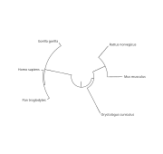

One tree, different drawings
Recognize the same branching relationships across two visual arrangements.
Compare both pages. The source and six selected mammals are identical; only the drawing layout changes. Trace nodes to support your answers.
Name: ______________________ Date: ______________
- Find the ancestor shared by human and chimpanzee. Locate the larger represented group containing gorilla.
- Choose another represented pair. Before turning the page, predict whether it will remain a pair in the circular drawing.
Text description: Both layouts show the same selected source paths. Human and chimpanzee are nested with gorilla; mouse and rat form another represented pair. Taxa omitted from the full source remain omitted in both views.
Upham, Esselstyn & Jetz (2019). Paper: 10.1371/journal.pbio.3000494. Data: 10.5061/dryad.tb03d03, version 4, S3. Activity: PhyloInk education, 0BSD.
One tree, different drawings — continued

- Trace the same pairs and nested groups. Has any shared ancestry changed? Explain your evidence.
- Would exchanging two daughter branches around their shared node change the relationships? Explain without relying on where names appear.
Text description: Both layouts show the same selected source paths. Human and chimpanzee are nested with gorilla; mouse and rat form another represented pair. Taxa omitted from the full source remain omitted in both views.
Upham, Esselstyn & Jetz (2019). Paper: 10.1371/journal.pbio.3000494. Data: 10.5061/dryad.tb03d03, version 4, S3. Activity: PhyloInk education, 0BSD.